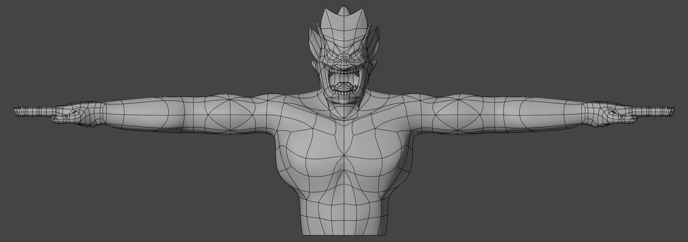
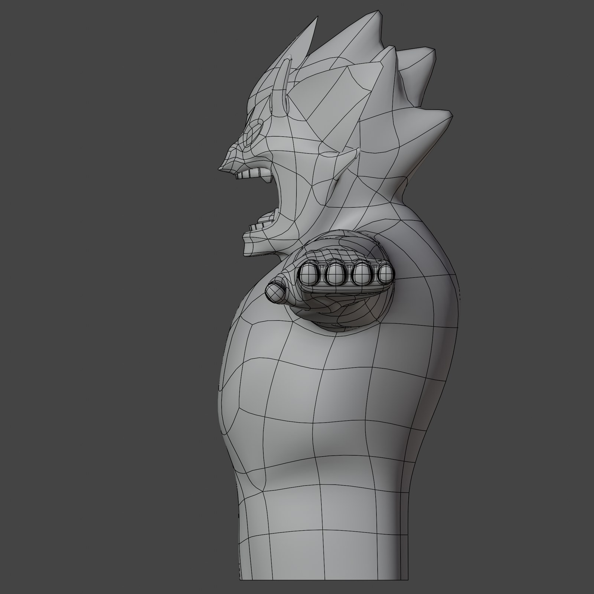
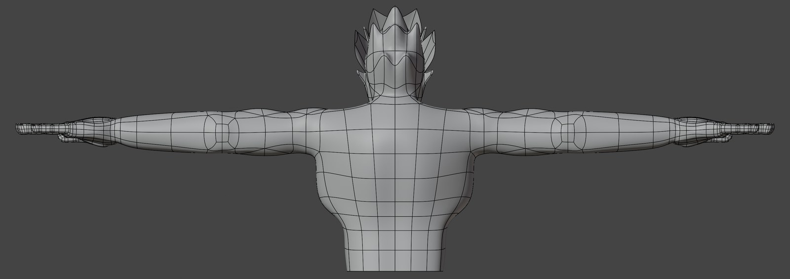
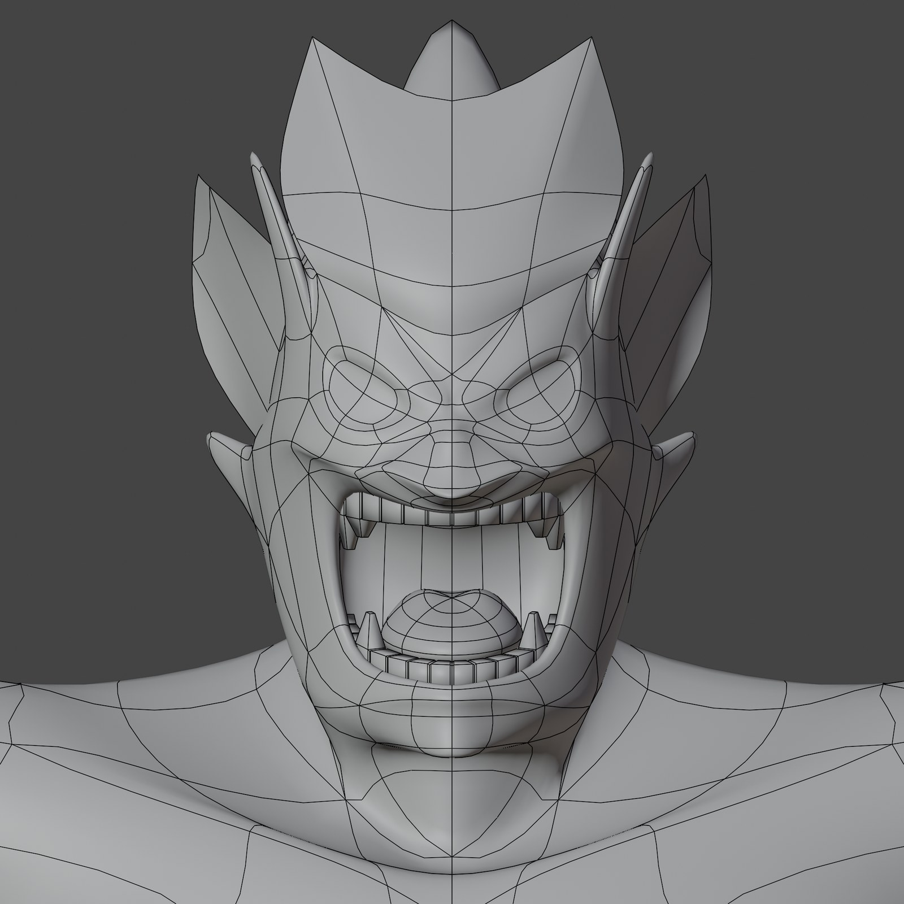
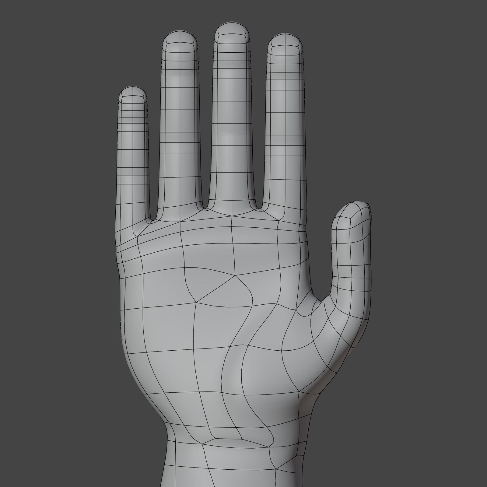
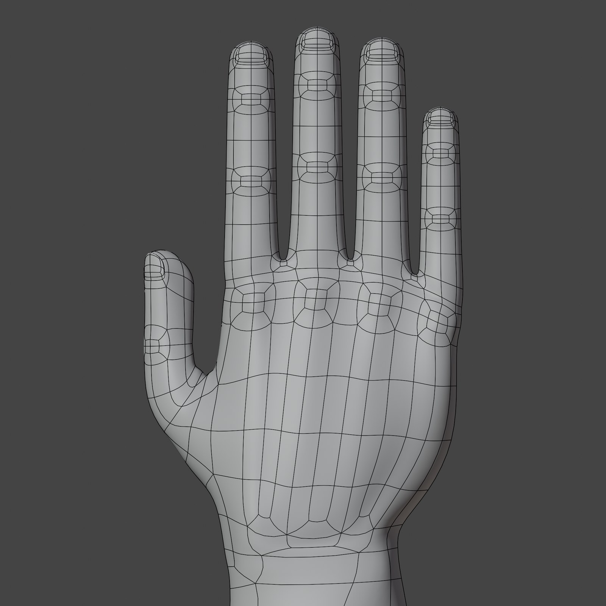
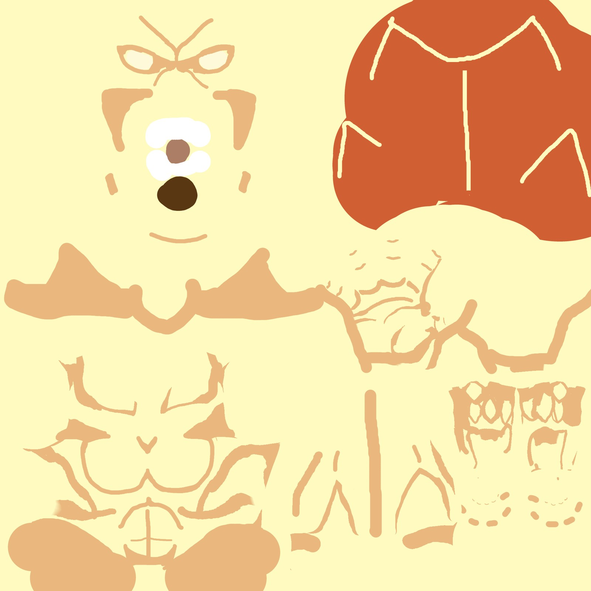
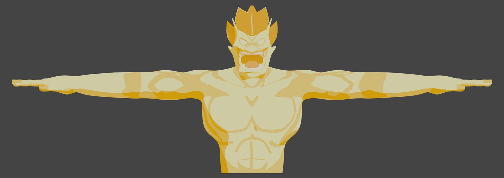
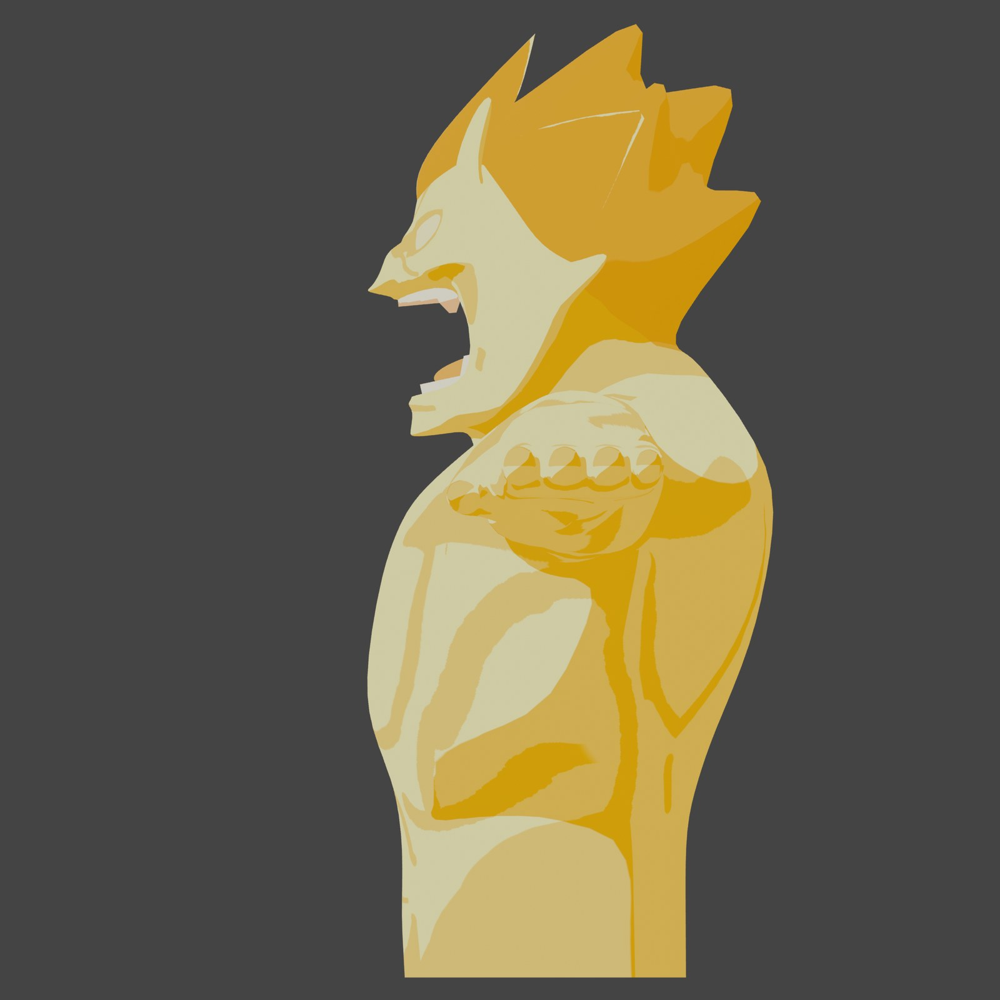
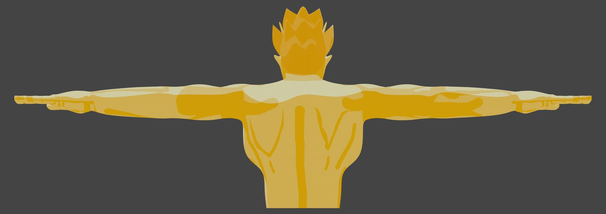

FAN VFX — CG×実写合成 / 2021
マジンザハンド 再現してみた
『イナズマイレブン』の必殺技をBlender×実写合成で再現（非公式・ファン制作）
高校2年の秋に公開した、『イナズマイレブン』の必殺技「マジンザハンド」の再現VFXです。技の主役であるマジンのキャラクターをBlenderでモデリングし、アニメーションを付けて、実写映像に合成しました。
読み込み中…
SUBJECT
「マジンザハンド」を実写で
題材は『イナズマイレブン』で円堂守が使う必殺キャッチ技「マジン・ザ・ハンド」。ゴールキーパーの背後に巨大なマジンが現れ、その手でシュートを受け止める——あの画を、アニメの中ではなく実写の映像でやってみたい、という発想から始まった一本です（非公式・ファン制作）。
MODELING · WIREFRAME
映る範囲を作り切る
マジンはゼロからのフルスクラッチ。逆立つ髪、牙を剥いた咆哮の表情、筋肉質な上半身までを、合成カットに映る範囲に絞ってモデリングしました。頂点数は39,807／三角面数は79,480。当時はサブディビジョンをレベル2で適用して書き出していたため大きめで、レベル1なら10,269／20,464に収まります。






拡大中は ←→ で切替。技名のとおり「手」が主役なので、手は爪・関節まで独立に作り込んでいます。
TEXTURE · LOOK
全身を1枚のテクスチャに収める
テクスチャは顔・体・髪をまとめた1枚構成。ベースの体色に、陰影と模様を直接描き込んでいます。マテリアルプレビューの3アングルで、塗りが立体にどう乗っているかを確認できます。




ANIMATION · COMPOSITE
動かして実写に重ねる
モデルには29.97fps・183フレーム（約6秒）のアニメーションを付けました。マジンが技を繰り出す動きをカットに合わせて作り、実写映像に合成して1本の映像に仕上げています。
SPEC
- 公開
- 2021年11月17日（当時はInstagramで公開。YouTube版は本サイト掲載にあたっての再アップロード）
- 形式
- 3DCGキャラクター＋実写合成VFX
- 担当
- モデリング・テクスチャ・アニメーション・合成（個人制作）
- 題材
- 『イナズマイレブン』の必殺技「マジン・ザ・ハンド」の再現（非公式・ファン制作。原作の権利は各権利者に帰属します）
- 頂点数／三角面数
- 39,807 ／ 79,480（サブディビジョン Lv2 適用時。Lv1では 10,269 ／ 20,464）
- アニメーション
- 29.97fps・1〜183フレーム
- テクスチャ
- 1枚
- ツール
- Blender